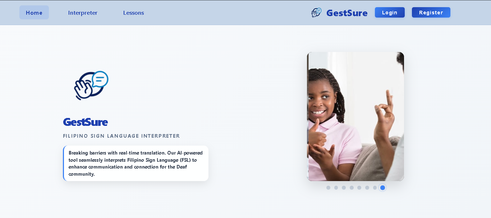
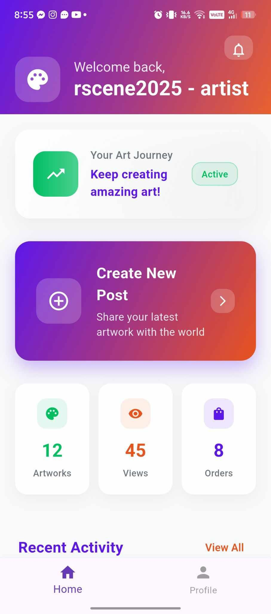
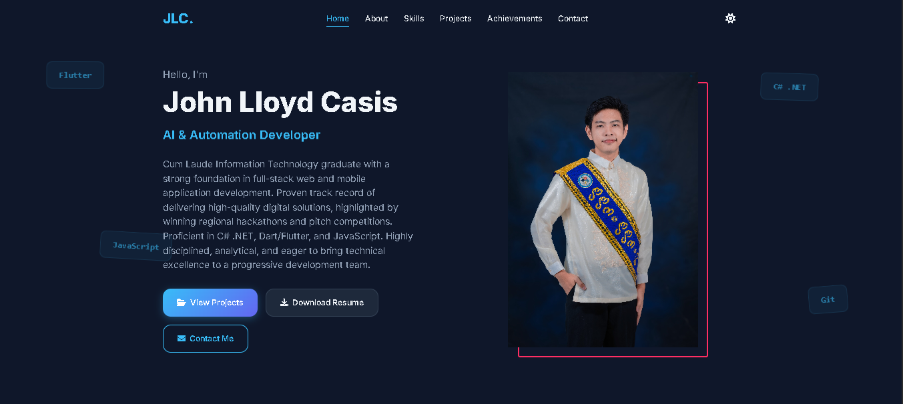

Loading...
Hello, I'm
Cum Laude Information Technology graduate with a strong foundation in full-stack web and mobile application development. Proven track record of delivering high-quality digital solutions, highlighted by winning regional hackathons and pitch competitions. Proficient in C# .NET, Dart/Flutter, and JavaScript. Highly disciplined, analytical, and eager to bring technical excellence to a progressive development team.
I am a passionate Full Stack Developer and AI/Automation Developer with a strong academic background from Samar State University. I specialize in building scalable web and mobile applications, leveraging modern technologies and best practices.
Location
Catbalogan City, Samar
Degree
BS in Information Technology
casislloyd@gmail.com
Languages
English, Filipino
Availability
Available for work
Samar State University
2022 - 2026
Bachelor of Science in Information Technology, Cum Laude
DPWH - Samar 2nd District Engineering Office
Feb 2026 - Apr 2026
Civil Service & TESDA
2022
Tech & Innovation
Web Development, Mobile Apps, AI/Automation, Hackathons, Video Editing

For Catbalogan 1 SPED Center - Co-developed (2026)

Co-developed (2025)

Personal Portfolio Website - Developed (2026)
Bachelor of Science in Information Technology
July 2026Rscene Hackathon, Catbalogan City
2025SSU Charter Day Pitch Fest (AuthentiSync Plus)
2024Professional Level - Honor Graduate
2022Computer Systems Servicing
April 2022IT Intern at Samar 2nd District Engineering Office
Feb - Apr 2026Feel free to reach out for collaborations, opportunities, or just a friendly chat!